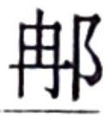

张廷尉释之 者，堵阳 人也，字季 。有兄仲 同居。以訾为骑郎，事孝文 帝 ，十岁不得调，无所知名。释之 曰：“久宦减仲 之产，不遂。”欲自免归。中郎将袁盎 知其贤，惜其去，乃请徙释之 补谒者。释之 既朝毕，因前言便宜事。文帝 曰：“卑之，毋甚高论，令今可施行也。”于是释之 言秦汉 之间事，秦 所以失而汉 所以兴者久之。文帝 称善，乃拜释之 为谒者仆射。
释之 从行，登虎圈。上问上林 尉诸禽兽簿，十馀问，尉左右视，尽不能对。虎圈啬夫从旁代尉对上所问禽兽簿甚悉，欲以观其能口对响应无穷者。文帝 曰：“吏不当若是邪？尉无赖！”乃诏释之 拜啬夫为上林 令。释之 久之前曰：“陛下以绛侯周勃 何如人也？”上曰：“长者也。”又复问：“东阳侯张相如 何如人也？”上复曰：“长者。”释之 曰：“夫绛侯 、东阳侯 称为长者，此两人言事曾不能出口，岂敩此啬夫谍谍利口捷给哉！且秦 以任刀笔之吏，吏争以亟疾苛察相高，然其敝徒文具耳，无恻隐之实。以故不闻其过，陵迟而至于二世 ，天下土崩。今陛下以啬夫口辩而超迁之，臣恐天下随风靡靡，争为口辩而无其实。且下之化上疾于景响，举错不可不审也。”文帝 曰：“善。”乃止不拜啬夫。
上就车，召释之 参乘，徐行，问释之秦 之敝。具以质言。至宫，上拜释 之 为公车令。
顷之，太子与梁王 共车入朝，不下司马门，于是释之 追止太子、梁王 无得入殿门。遂劾不下公门不敬，奏之。薄太后 闻之，文帝 免冠谢曰：“教儿子不谨。”薄太后 乃使使承诏赦太子、梁王 ，然后得入。文帝 由是奇释之 ，拜为中大夫。
顷之，至中郎将。从行至霸陵 ，居北临厕。是时慎夫人 从，上指示慎 夫人新丰 道，曰：“此走邯郸 道也。”使慎夫人 鼓瑟，上自倚瑟而歌，意惨凄悲怀，顾谓群臣曰：“嗟乎！以北山石为椁，用纻絮斮陈，蕠漆其间，岂可动哉！”左右皆曰：“善。”释之 前进曰：“使其中有可欲者，虽锢南山犹有郄；使 其中无可欲者，虽无石椁，又何戚焉！”文帝 称善。其后拜释之 为廷尉。
顷之，上行出中渭桥 ，有一人从桥下走出，乘舆马惊。于是使骑捕，属之廷尉。释之 治问。曰：“县人来，闻跸，匿桥下。久之，以为行已过，即出，见乘舆车骑，即走耳。”廷尉奏当，一人犯跸，当罚金。文帝 怒曰：“此人亲惊吾马，吾马赖柔和，令他马，固不败伤我乎？而廷尉乃当之罚金！”释 之 曰：“法者天子所与天下公共也。今法如此而更重之，是法不信于民也。且方其时，上使立诛之则已。今既下廷尉，廷尉，天下之平也，一倾而天下用法皆为轻重，民安所措其手足？唯陛下察之。”良久，上曰：“廷尉当是也。”
其后有人盗高庙 坐前玉环，捕得，文帝 怒，下廷尉治。释之 案律盗宗庙服御物者为奏，奏当弃市。上大怒曰：“人之无道，乃盗先帝庙器，吾属廷尉者，欲致之族，而君以法奏之，非吾所以共承宗庙意也。”释之 免冠顿首谢曰：“法如是足也。且罪等，然以逆顺为差。今盗宗庙器而族之，有如万分之一，假令愚民取长陵 一抔土，陛下何以加其法乎？”久之，文帝 与太后言之，乃许廷尉当。是时，中尉条侯周亚夫 与梁 相山都侯王恬开 见释之 持议平，乃结为亲友。张廷尉 由此天下称之。
后文帝 崩，景帝 立，释之 恐，称病。欲免去，惧大诛至；欲见谢，则未知何如。用王生 计，卒见谢，景帝 不过也。
王生 者，善为黄老 言，处士也。尝召居廷中，三公九卿尽会立，王生 老人，曰“吾袜解”，顾谓张廷尉 ：“为我结袜！”释之 跪而结之。既已，人或谓王生 曰：“独奈何廷辱张廷尉 ，使跪结袜？”王生 曰：“吾老且贱，自度终无益于张廷尉 。张廷尉 方今天下名臣，吾故聊辱廷尉，使跪结袜，欲以重之。”诸公闻之，贤王生 而重张廷尉 。
张廷尉
事景帝
岁馀，为淮南王
相，犹尚以前过也。久之，释之
卒。其子曰张挚
，字长公
，官至大夫，免。以不能取容当世，故终身不仕。
冯唐 者，其大父赵 人。父徙代 。汉 兴徙安陵 。唐 以孝著，为中郎署长，事文帝 。文帝 辇过，问唐 曰：“父老何自为郎？家安在？”唐 具以实对。文帝 曰：“吾居代 时，吾尚食监高袪 数为我言赵 将李齐 之贤，战于钜鹿 下。今吾每饭，意未尝不在钜鹿 也。父知之乎？”唐 对曰：“尚不如廉颇 、李牧 之为将也。”上曰：“何以？”唐 曰：“臣大父在赵 时，为官率将，善李牧 。臣父故为代 相，善赵 将李齐 ，知其为人也。”上既闻廉颇 、李牧 为人，良说，而搏髀曰：“嗟乎！吾独不得廉颇 、李牧 时为吾将，吾岂忧匈奴 哉！”唐曰：“主臣！ 陛下虽得廉颇 、李牧 ，弗能用也。”上怒，起入禁中。良久，召唐 让曰：“公奈何众辱我，独无间处乎？”唐 谢曰：“鄙人不知忌讳。”
当是之时，匈奴 新大入朝  ，杀北地 都尉卬 。上以胡 寇为意，乃卒复问唐 曰：“公何以知吾不能用廉颇 、李牧 也？”唐 对曰：“臣闻上古王者之遣将也，跪而推毂，曰阃以内者，寡人制之；阃以外者，将军制之。军功爵赏皆决于外，归而奏之。此非虚言也。臣大父言，李牧 为赵 将居边，军市之租皆自用飨士，赏赐决于外，不从中扰也。委任而责成功，故李牧 乃得尽其智能，遣选车千三百乘，彀骑万三千，百金之士十万，是以北逐单于，破东胡 ，灭澹林 ，西抑强秦 ，南支韩 、魏 。当是之时，赵 几霸。其后会赵王迁 立，其母倡也。王迁 立，乃用郭开 谗，卒诛李牧 ，令颜聚 代之。是以兵破士北，为秦 所禽灭。今臣窃闻魏尚 为云中 守，其军市租尽以飨士卒，出私养钱，五日一椎牛，飨宾客军吏舍人，是以匈奴 远避，不近云中 之塞。虏曾一入，尚 率车骑击之，所杀甚众。夫士卒尽家人子，起田中从军，安知尺籍伍符。终日力战，斩首捕虏，上功莫府，一言不相应，文吏以法绳之。其赏不行而吏奉法必用。臣愚，以为陛下法太明，赏太轻，罚太重。且云中 守魏 尚 坐上功首虏差六级，陛下下之吏，削其爵，罚作之。由此言之，陛下虽得廉颇 、李牧 ，弗能用也。臣诚愚，触忌讳，死罪死罪！”文帝 说。是日令冯唐 持节赦魏尚 ，复以为云中 守，而拜唐 为车骑都尉，主中尉及郡国车士。
七年，景帝
立，以唐
为楚
相，免。武帝
立，求贤良，举冯唐
。唐
时年九十馀，不能复为官，乃以唐
子冯遂
为郎。遂
字王孙
，亦奇士，与余善。
太史公 曰：张季 之言长者，守法不阿意；冯公 之论将率，有味哉！有味哉！语曰“不知其人，视其友”。二君之所称诵，可著廊庙。书 曰“不偏不党，王道荡荡；不党不偏，王道便便”。张季 、冯公 近之矣。